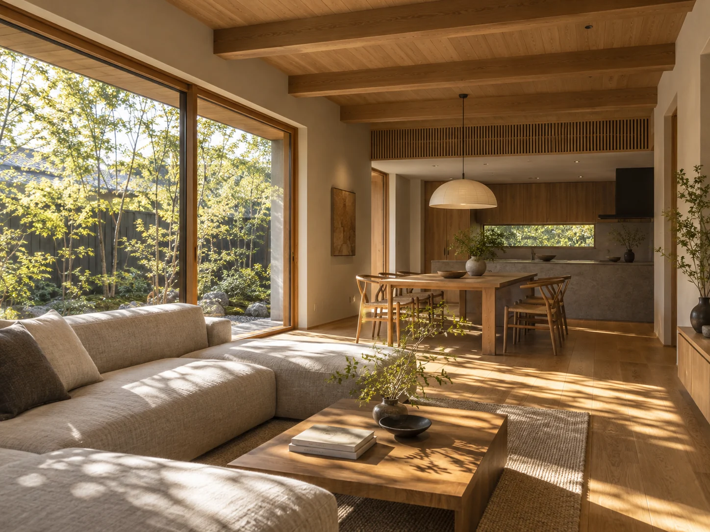
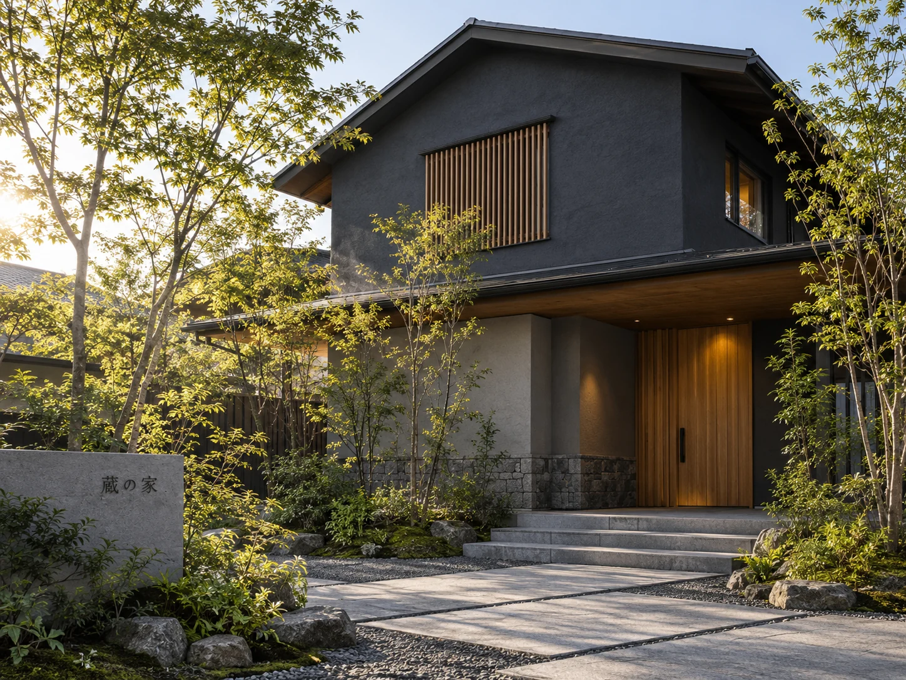
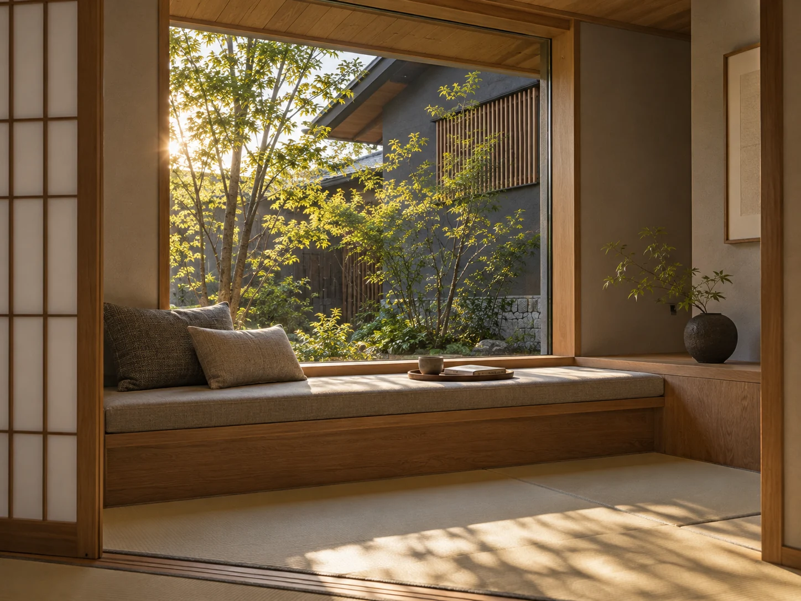
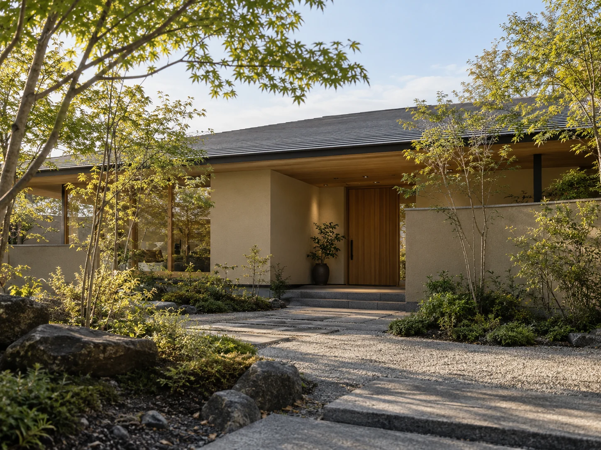
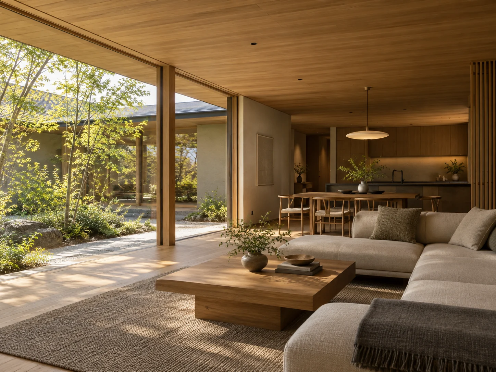
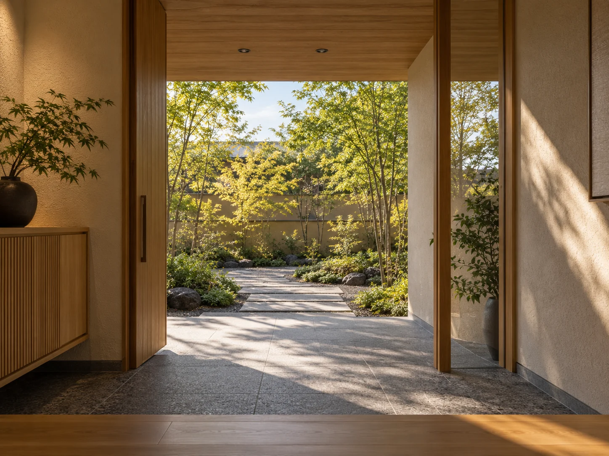

MODEL HOUSE
モデルハウス
自然素材に包まれた、心地よい暮らしを、
実際に体感してみませんか。KURAHAUSの家づくりを、見て、触れて、感じていただける
2つのモデルハウスをご用意しています。


UTSUNOMIYA / KURA HOUSE
木と、光と、暮らす。宇都宮｜蔵の家モデルハウス
深い軒に守られた、落ち着きのある佇まい。自然素材の温もりと、季節の移ろいを感じる暮らしをご体感いただける、2階建てのモデルハウスです。
- 延床面積
- 124.2㎡（37.6坪）
- 間取り
- 3LDK＋書斎
- 構造
- 木造軸組工法
- 所在地
- 栃木県宇都宮市（詳細はご予約時にご案内します）
KURAHAUS宇都宮モデルハウス地図で見る →
- 01
自然素材の心地よさ
無垢の木や漆喰など、本物の素材がつくるやさしい空気感。
- 02
庭とつながる暮らし
季節の緑を感じる庭が、日々の暮らしにゆとりをもたらします。
- 03
和のくつろぎ空間
窓辺の居場所や畳スペースなど、静かに過ごせる場所を設けています。



OYAMA / HIRAYA
庭と、緑と、つながる。小山｜平屋のモデルハウス
庭との一体感を大切にした、開放的な平屋の住まい。ゆるやかにつながる空間と、自然に寄り添う暮らしをご体感いただけるモデルハウスです。
- 延床面積
- 106.8㎡（32.3坪）
- 間取り
- 3LDK
- 構造
- 木造軸組工法
- 所在地
- 栃木県小山市（詳細はご予約時にご案内します）
KURAHAUS小山モデルハウス地図で見る →
- 01
のびやかな平屋の暮らし
ワンフロアでつながる、快適で動きやすい間取り。
- 02
庭を感じる大開口
大きな窓が庭の緑を取り込み、四季のうつろいを身近に感じます。
- 03
上質な素材と設え
木の天井や造作家具、素材の美しさが際立つ空間。
VISIT INFORMATION
見学のご案内
ゆっくりとご覧いただけるよう、事前のご予約をおすすめしています。
見学時間
10:00〜17:00
完全予約制キッズ歓迎
お子さま連れでも
安心してご見学いただけます。駐車場あり
各モデルハウスに
駐車スペースをご用意しています。オンライン相談可
ご自宅からでも
ご相談いただけます。